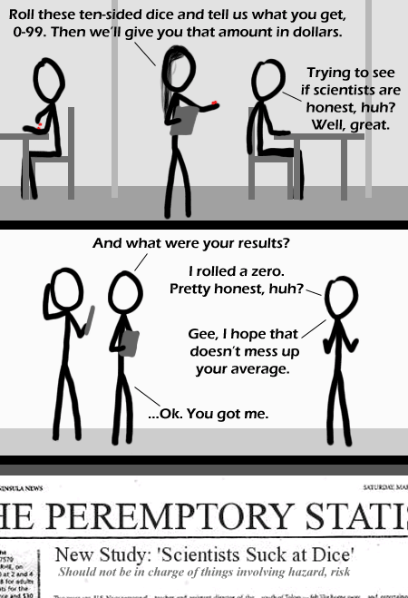

Comic JK 342
When I Feel Like It
⇤
<
?
>
⇥

⇤
<
?
>
⇥
Forum
.
RSS
.
Digg
.
Facebook
.
Reddit
.
Twitter
.
Stumbleupon
Enter your thoughts on number 342 here. Please, no spamming, trolling, or phreaking. >New Study: 'Scientists are Too Honest': Should not be in charge of anything >>Or they all chose 00 for the sole purpose of messing up the average. BUT HOW DO THEY KNOW WHICH DIE REPRESENTS WHICH DIGIT? Is that newspaper titled "The Peremptory Statistician"? Peremptory, = "leaving no opportunity for denial or refusal; that precludes or does not admit of debate" I don't get it. >The scientist lied to make himself look more honest. Instead he wound up looking very, very unlucky. >>He over did it tho, as the lowest he could have rolled is a 2 >>>No, the way he's supposed to roll the dice, one die roll is the digit in the 10's place, and the other is the digit in the 1's place (e.g. rolling a 1 on the first die and a 7 on the second is 17), thus allowing the full range of numbers from 0-99. >New Study:'Defective 10-sided dice ruin scientific study: All but one person roll 0' Wait, shouldn't 00 be 100? >range "0-99",not 1-100 >>10-sided dice come in two sorts (numbered, anyway). 1-10 dice and 0-9 dice. 0-9 dice are used when each represents a digit in the number. 00 can equal 100 when the rules call for it, but here they did not. 1-10 dice are added together in the normal manner. >>>Alternately, the study indicates that scientists should only use 10 sided dice while playing DnD, where the tables requiring a D100 roll interpret double-0 as 100. Besides, some dicing games, snake-eyes wins. >>>>Does it not strike you that, if it needs to be explained, it must be pretty shit in the first place? >>>>>You must not be familiar with webcomics. "Scientists suck at Dice" --> And how do they taste like? >The OED actually accepts "suck" as in "bad" now, if I recall correctly. At least, I'm pretty sure the WiTricity presenter on TED was using the OED. I always wanted to date a statistician... that way I'd be sure of getting a girl who understood the standard deviations... >I prefer nonstandard deviations. They're much more interesting. I think this only demonstrates that people are too stupid to observe the scientist at work to at least have some hope of verifying that s/he is honest. I love 10-sided dice because they're so easy to spin on their points--Treitmaniac New Study: 'Lucky second-rollers more likely candidates for depression than lucky first-rollers' It's not a very good study because they aren't observing the results, they are just observing what the scientists say This comic really doesn't work for me. I have no reason to believe that the scientist is lying, his comment about messing with averages makes no sense at all, the headline feels extremely random... yeah, none of it makes sense. >Aw. I feel bad that you are missing out on jokes. maybe there are secret devices in the dice that tell what the scientists rolled